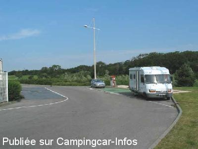
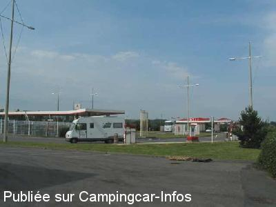

AS = Aire de services uniquement de :
SAINT MARTIN BOULOGNE
(N° 847)
Accès/adresse :
N42
Parking du Centre Commercial Auchan
62280 SAINT MARTIN BOULOGNE
Parking du Centre Commercial Auchan
62280 SAINT MARTIN BOULOGNE
Latitude : (Nord) 50.73278° Décimaux ou 50° 43′ 58′′
Longitude : (Est) 1.66861° Décimaux ou 1° 40′ 6′′
Tarif : 2009
Services : 2€ (100 L d'eau), jeton à la station-service.
Type de borne : RACLET
Services :


Autres informations :

Le 27/08/2004 par nomade 59

Le 27/08/2004 par nomade 59
de
pilote580
le 23/12/2009 :
Bonjour. Il y a possibilité de stationner sur le parking gratuit, à moins de 100m du centre ville. Il est situé à gauche du Casino. Venant du port, après le pont "Marguet", restez sur la droite et vous entrez sur la 2 routes. C'est un ancien parking qui servait pour les bus de Boulogne sur Mer, il est cloturé mais pas fermé et autorisé à tous les véhicules.
Bonjour. Il y a possibilité de stationner sur le parking gratuit, à moins de 100m du centre ville. Il est situé à gauche du Casino. Venant du port, après le pont "Marguet", restez sur la droite et vous entrez sur la 2 routes. C'est un ancien parking qui servait pour les bus de Boulogne sur Mer, il est cloturé mais pas fermé et autorisé à tous les véhicules.
de
Nat
le 14/08/2009 :
Aire de services à la station essence du centre commercial Auchan: 2€ les 100 litres d'eau (jeton à acheter à la station-service).
Aire de services à la station essence du centre commercial Auchan: 2€ les 100 litres d'eau (jeton à acheter à la station-service).
de
Hans Lavoir.
le 30/05/2004 :
Een bijzonder fijne plaats om te staan. Je bent op loop en fiets afstand van het centrum.
Een bijzonder fijne plaats om te staan. Je bent op loop en fiets afstand van het centrum.